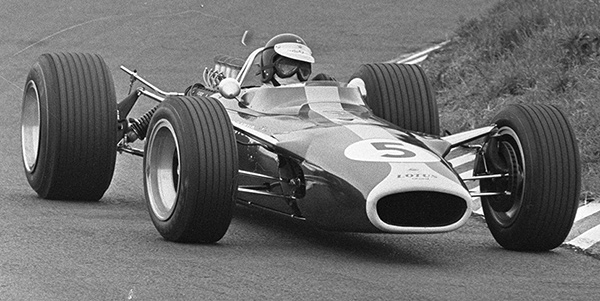
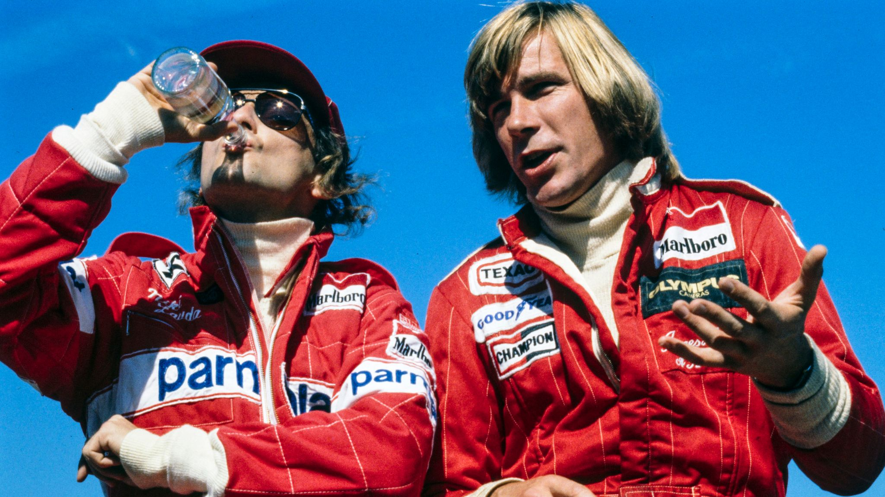
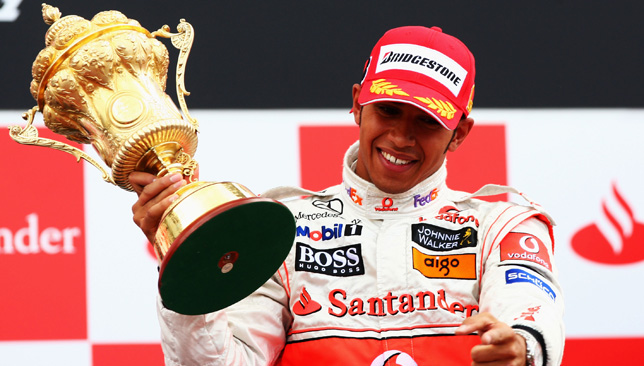

-
1950
First Official Formula 1 World Championship
The inaugural race was held at Silverstone, establishing Formula 1 as the premier racing competition.

-
1958
Introduction of Constructors’ Championship
Teams begin competing for their own title alongside drivers.

-
1967
Rise of Modern Car Technology
Aerodynamic wings and engine advances transform F1 cars into much faster machines.
 -
1976
Lauda vs. Hunt Rivalry
Niki Lauda returns from a near-fatal crash to challenge James Hunt for the title.
 -
1988
McLaren Dominance
Senna and Prost win 15 of 16 races with McLaren-Honda in one of the most dominant seasons.

-
1994
Safety Reforms After Imola
The tragic deaths of Ayrton Senna and Roland Ratzenberger lead to major safety overhauls.

-
2000
Schumacher Era Begins
Michael Schumacher wins the first of five straight titles with Ferrari.

-
2008
Hamilton's First Title
Lewis Hamilton clinches the championship on the final lap in Brazil.
 -
2014
Hybrid Era
1.6L turbo-hybrid engines usher in a new era dominated by Mercedes and Hamilton.

-
2021
Verstappen vs. Hamilton Showdown
Verstappen wins his first world title after a controversial, last-lap battle in Abu Dhabi.

-
2022
New Car Regulations
Ground-effect cars return with sweeping aero changes and closer racing.

-
2026
Next-Gen Power Units
Lighter, more efficient cars debut with increased electrical power and sustainable fuels.